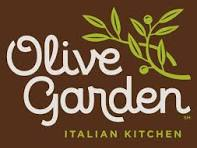
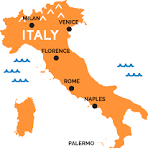

One of the best dishes that has ever been created is Chicken Fettuccine Alfredo!

Nothing and I mean NOTHING beats this dish! Well... maybe tacos, but that is a whole different story. Chicken Fettuccine Alfredo is a dish that many get wrong. My favorite is from The Olive Garden! I know, I know.... you just judged me, but honestly I don't care. Savory pasta, tender chicken and UNLIMITED BREAD STICKS! Don't even get me started on the sou..
Sorry, .... let me calm down a bit. Point is, everyone makes it drastically different, and thats okay... Sometimes.
Here is my favoite Chicken Fettuccine Alfredo recipe that closely mimics The Olive Garden!